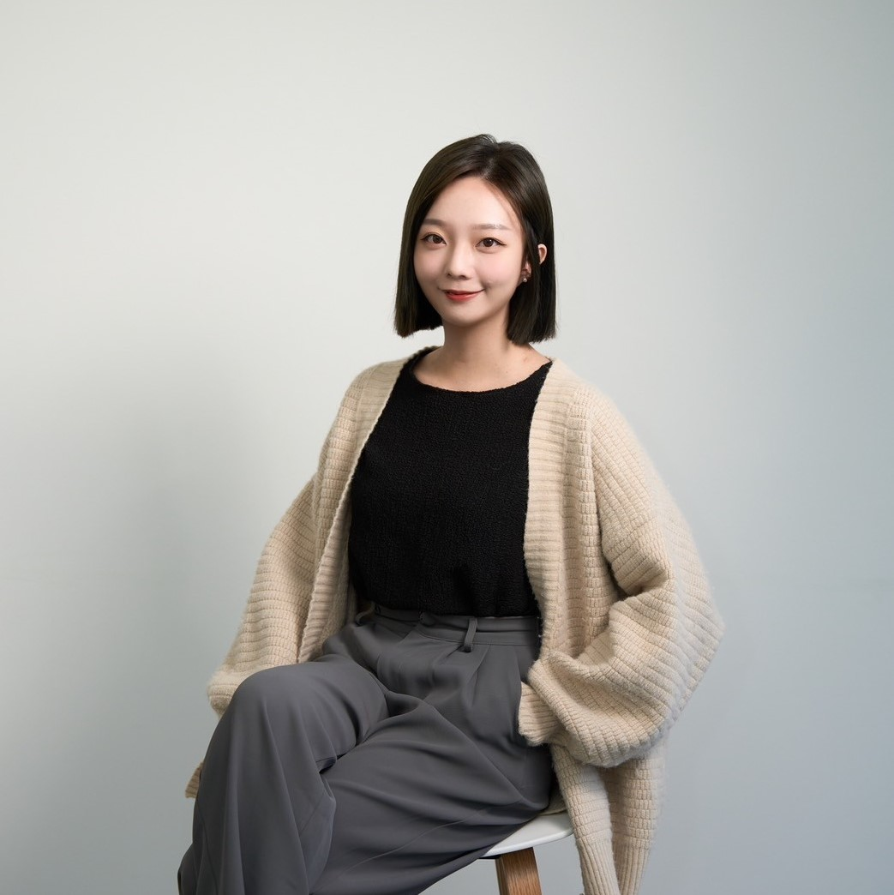
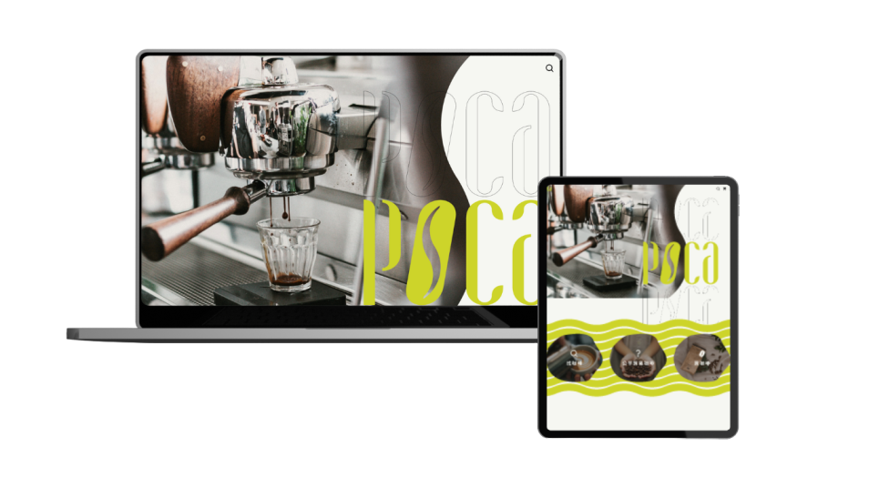
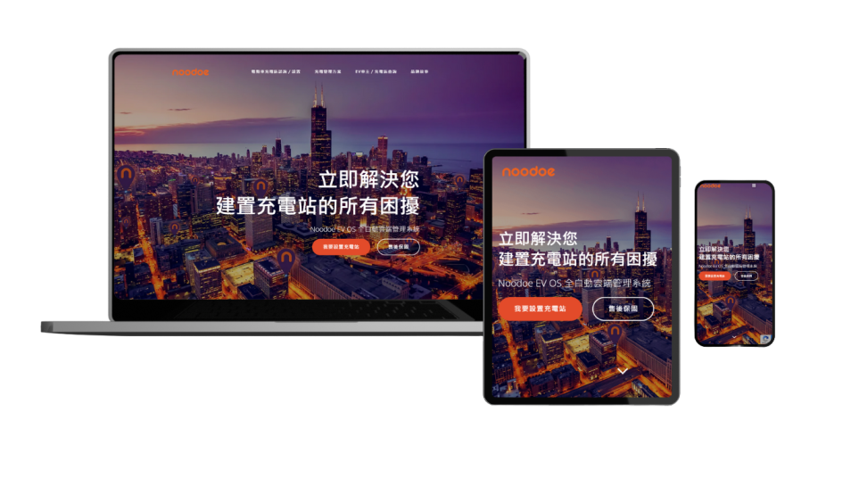
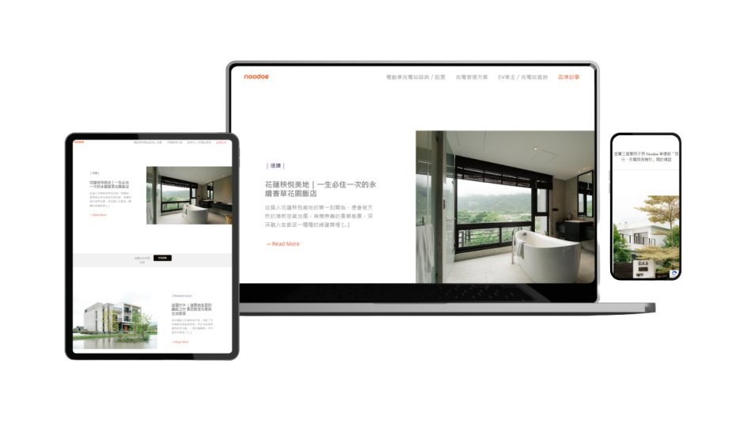
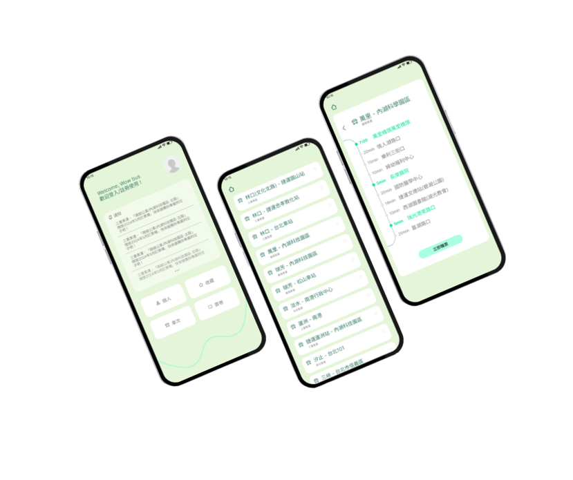

我是劉馨璘 Doris Liu，一位擁有不同角色技能的 UIUX 設計師。
從行銷設計師的角色開始，我為完成當時負責的企業官網，逐步理解 UIUX 設計，並深入探討使用者體驗。
通過不斷的學習與進修，我最終帶著滿滿的熱忱，決心踏入前端設計領域。
在這段過程中，我接觸了多個不同領域，這些經歷成為我成長的寶貴養分。不論是以行銷的角度運用「商業思維」策劃 SEO 優化策略，或是使用 GA 進行流量追蹤與分析；以公關的角度強化「品牌思維」亮點曝光；還是以 20年美術班的藝術經歷結合「美學與設計兼備」的角度思考每個介面的使用體驗，如何讓功能互動順暢簡單且具美感，這些都豐富了我的視野和能力。
# React # HTML # SaaS # Javascript # SQL # PHP # Bootstrap # jQuery # Git # RWD # UIUX # Figma
我結合20年藝術經驗進行設計界面，提升用戶體驗與視覺吸引力，重視色彩、排版和層次感，確保設計的美觀與功能性。
我運用20年UX設計經驗，從使用者研究到易用性測試，確保系統設計的一致性，並提升設計的正常運作及效果。
我通過深入的競品分析，制定有效產品策略，優化設計與市場推廣計劃，提升市場競爭力，實現業務目標。
我熟悉RWD與Bootstrap，能手刻切版，結合React和Vue動態設計，優化HTML5與CSS3屬性，提高開發效率與效果。

市面上普遍關於咖啡廳的資訊都較零散，咖啡廳的文章、菜單以及詳細店家資訊往往需要在不同的網站做查詢，而 POCA 希望整合這些痛點。
除了讓訪問者可以依造喜好的類別找尋咖啡廳，也能觀看文章深入了解咖啡廳的魅力，以及詳細店家資訊。
同時致力於推廣公平貿易咖啡，為咖啡小農提供販售平台。
我們希望通過這個平台，讓更多人了解公平貿易的理念，並享受高品質的咖啡。
功能：
咖啡廳文章：分享有關咖啡文化和咖啡廳故事的文章，讓用戶依期望類別快速搜尋且了解咖啡廳。
購買咖啡：免登入會員，用戶可以輕鬆地選購他們喜愛的公平貿易咖啡，支持公平貿易運動。
負責項目：我負責網站的前端開發，實現文章快速篩選和購物車功能，確保用戶在每一步操作中都能享受到順暢和愉快的體驗。

旨在展示企業的核心價值和品牌理念，讓訪問者感受到企業的使命，快速聯繫我們，找到最適合的合作方式。 企業品牌網站為需要展示品牌與增加使用停留率為主，因此除了內容行銷外，有哪些功能是使用者所在乎的也十分重要。
功能：
品牌理念：設計了一個優雅的頁面，展示企業的核心價值和品牌故事，讓用戶一目了然。
亮點展示：通過精心設計的圖文並茂的頁面，突出企業的主要業務和成功案例，吸引訪問者的注意。
解決方案：詳細介紹了企業提供的各種解決方案，幫助訪問者找到適合他們需求的服務。
連繫合作：提供簡單明了的聯繫方式和合作選項，方便潛在客戶與企業建立聯繫。
負責項目：我參與了前端設計和開發，致力於創建響應式佈局和動態內容展示，讓用戶在任何設備上都能享受到一致的視覺和使用體驗。

這是一個充滿情感和故事的合作展示平台。我們通過深入且溫暖的文章，介紹企業合作的成功案例，讓用戶感受到合作背後的努力和成果。
在這個專案中，我負責UIUX設計規劃，以及基本前端開發，確保網站所想傳達的理念和用戶體驗達到最佳效果。 而我除了以行銷公關的身分，採訪合作品牌並撰寫新聞稿外，同時也負責 Photo Gallery 的視覺與功能設計、以及前端開發執行。在每一篇採訪中，皆特別融入了合作品牌特有的亮點，例如「 宜蘭行健有機村唯一民宿」，與品牌方的 Logo 和 CI 色，一點點的小巧思，除了讓網頁更有溫度，同時也更能傳達理念，創造更多的合作可能。
功能：
合作案例文章：每篇文章都精心撰寫，詳細介紹了合作背景、過程和成果，讓訪問者更深入地了解合作的細節。
搜索和篩選：設計了強大的搜索和篩選功能，讓用戶可以輕鬆找到感興趣的合作案例。
圖片和視頻展示：每個案例都附有相關的圖片和視頻，增強文章的吸引力和說服力。
負責項目：我負責UIUX設計規劃，以及基本前端開發，確保網站所想傳達的理念和用戶體驗達到最佳效果。

描述：以通勤族的痛點為出發，redesign 跳蛙公車 APP，增加且修改功能，改善使用體驗與介面設計。
功能：
品牌理念：跳蛙公車為通勤族每日一早最先打開之APP，我們希望能使之更便利與美觀，讓一日有個更美好的開始。
亮點展示：通過精心設計的圖文並茂的頁面，突出企業的主要業務和成功案例，吸引訪問者的注意。
解決方案：詳細介紹了企業提供的各種解決方案，幫助訪問者找到適合他們需求的服務。
連繫合作：提供簡單明了的聯繫方式和合作選項，方便潛在客戶與企業建立聯繫。
負責項目：我參與了前端設計和開發，致力於創建響應式佈局和動態內容展示，讓用戶在任何設備上都能享受到一致的視覺和使用體驗。
0975-747-172